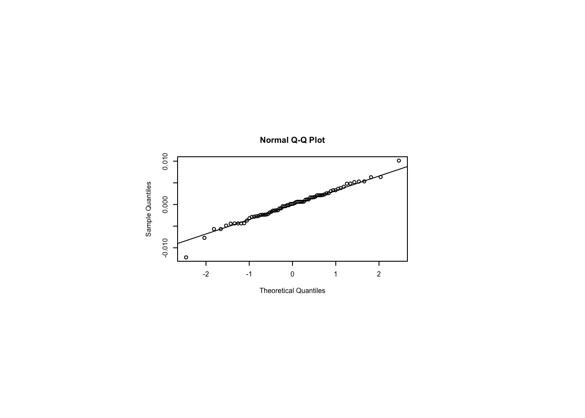
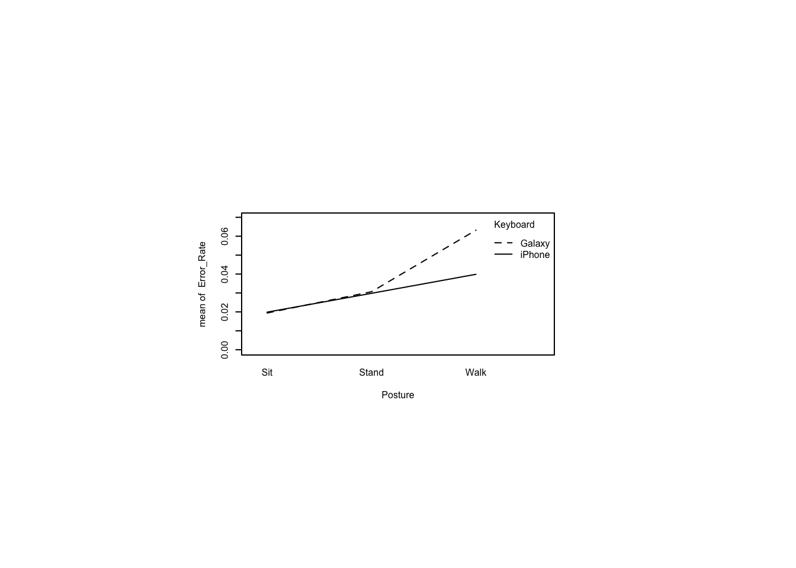
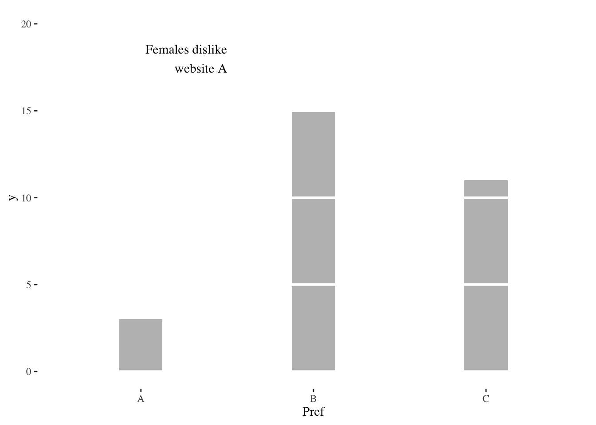
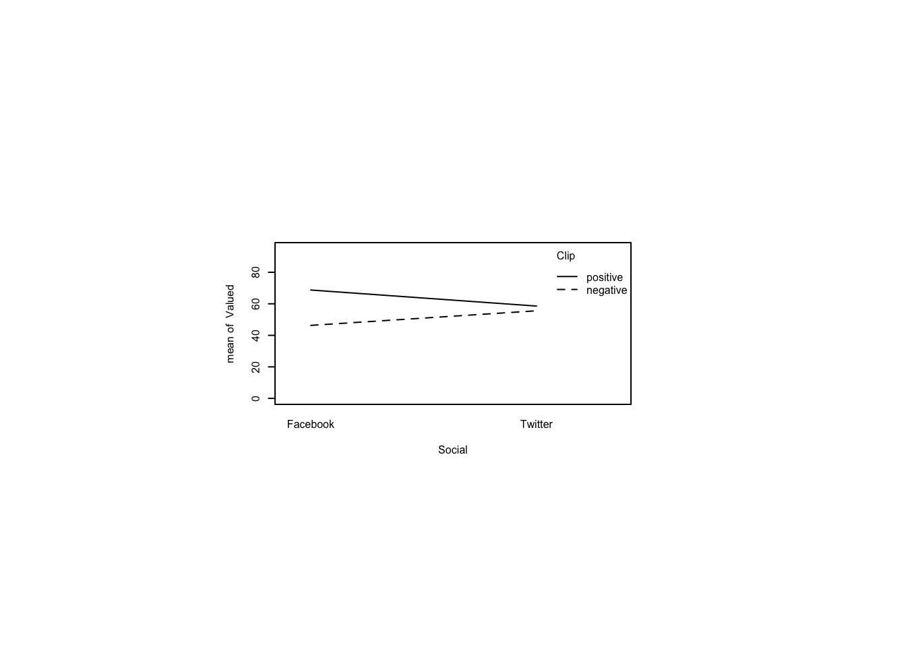
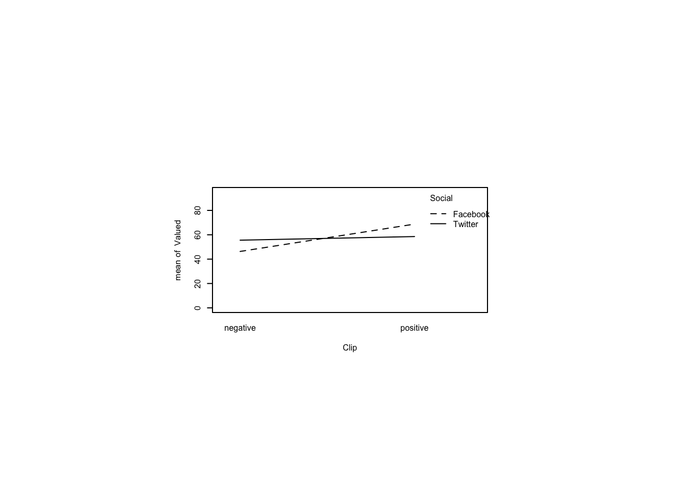

Following are my course notes from a 2018 Coursera course called Designing, Running, and Analyzing Experiments, taught by Jacob Wobbrock, a prominent HCI scholar. Note that Wobbrock is in no way responsible for any errors or deviations from his presentation.
These course notes are an example of reproducible research and literate programming. They are reproducible research because the same file that generated this html document also ran all the experiments. This is an example of literate programming in the sense that the code, pictures, equations, and narrative are all encapsulated in one file. The source file for this project, along with the data files, are enough for you to reproduce the results and reproduce the documentation. All the source material is available in my github account, although in an obscure location therein.
options(readr.show_col_types=FALSE) # supress column type messageslibrary(tidyverse)
── Attaching core tidyverse packages ──────────────────────── tidyverse 2.0.0 ──
✔ dplyr 1.1.2 ✔ readr 2.1.4
✔ forcats 1.0.0 ✔ stringr 1.5.0
✔ ggplot2 3.4.2 ✔ tibble 3.2.1
✔ lubridate 1.9.2 ✔ tidyr 1.3.0
✔ purrr 1.0.2
── Conflicts ────────────────────────────────────────── tidyverse_conflicts() ──
✖ dplyr::filter() masks stats::filter()
✖ dplyr::lag() masks stats::lag()
ℹ Use the conflicted package (<http://conflicted.r-lib.org/>) to force all conflicts to become errors
library(ggthemes)
13.1 How many prefer this over that? (Tests of proportions)
13.1.1 How many prefer website A over B? (One sample test of proportions in two categories)
Sixty subjects were asked whether they preferred website A or B. Their answer and a subject ID were recorded. Read the data and describe it.
prefsAB <-read_csv(paste0(Sys.getenv("STATS_DATA_DIR"),"/prefsAB.csv"))tail(prefsAB) # displays the last few rows of the data frame
# A tibble: 6 × 2
Subject Pref
<dbl> <chr>
1 55 A
2 56 B
3 57 A
4 58 B
5 59 B
6 60 A
prefsAB$Subject <-factor(prefsAB$Subject) # convert to nominal factorprefsAB$Pref <-factor(prefsAB$Pref) # convert to nominal factorsummary(prefsAB)
Is the difference between preferences significant? A default \(\chi^2\) test examines the proportions in two bins, expecting them to be equally apportioned.
To do the \(\chi^2\) test, first crosstabulate the data with xtabs().
Chi-squared test for given probabilities
data: prfs
X-squared = 17.067, df = 1, p-value = 3.609e-05
We don’t really need an exact binomial test yet because the \(\chi^2\) test told us enough: that the difference is not likely due to chance. That was only because there are only two choices. If there were more than two, we’d need a binomial test for every pair if the \(\chi^2\) test turned up a significant difference. This binomial test just foreshadows what we’ll need when we face three categories.
Exact binomial test
data: prfs
number of successes = 14, number of trials = 60, p-value = 4.224e-05
alternative hypothesis: true probability of success is not equal to 0.5
95 percent confidence interval:
0.1338373 0.3603828
sample estimates:
probability of success
0.2333333
13.1.2 How many prefer website A, B, or C? (One sample test of proportions in three categories)
First, read in and describe the data. Convert Subject to a factor because R reads any numerical data as, well, numeric, but we don’t want to treat it as such. R interprets any data with characters as a factor. We want Subject to be treated as a factor.
prefsABC <-read_csv(paste0(Sys.getenv("STATS_DATA_DIR"),"/prefsABC.csv"))head(prefsABC) # displays the first few rows of the data frame
# A tibble: 6 × 2
Subject Pref
<dbl> <chr>
1 1 C
2 2 C
3 3 B
4 4 C
5 5 C
6 6 B
You can think of the three websites as representing three bins and the preferences as filling up those bins. Either each bin gets one third of the preferences or there is a discrepancy. The Pearson \(\chi^2\) test functions as an omnibus test to tell whether there is any discrepancy in the proportions of the three bins.
prfs <-xtabs( ~ Pref, data=prefsABC)prfs # show counts
Pref
A B C
8 21 31
chisq.test(prfs)
Chi-squared test for given probabilities
data: prfs
X-squared = 13.3, df = 2, p-value = 0.001294
A multinomial test can test for other than an even distribution across bins. Here’s an example with a one third distribution in each bin.
Now we don’t know which pair(s) differed so it makes sense to conduct post hoc binomial tests with correction for multiple comparisons. The correction, made by p.adjust(), is because the more hypotheses we check, the higher the probability of a Type I error, a false positive. That is, the more hypotheses we test, the higher the probability that one will appear true by chance. Wikipedia has more detail in its “Multiple Comparisons Problem” article.
Here, we test separately for whether each one has a third of the preferences.
Plotting is slightly more complicated by the fact that we want to represent two groups. There are many ways to do this, including stacked bar charts, side-by-side bars, or the method chosen here, using facet_wrap(~Sex) to cause two separate plots based on Sex to be created.
Although we can guess by looking at the above plot that the difference for females is significant and the difference for males is not, a Pearson chi-square test provides some statistical evidence for this hunch.
prfs <-xtabs( ~ Pref + Sex, data=prefsABsex) # the '+' sign indicates two varsprfs
Sex
Pref F M
A 2 12
B 29 17
chisq.test(prfs)
Pearson's Chi-squared test with Yates' continuity correction
data: prfs
X-squared = 8.3588, df = 1, p-value = 0.003838
13.1.4 What if the data are lopsided? (G-test, alternative to chi-square)
Wikipedia tells us that the \(G\)-test dominates the \(\chi^2\) test when \(O_i>2E_i\) in the formula
\[\chi^2=\sum_i \frac{(O_i-E_i)^2}{E_i}\]
where \(O_i\) is the observed and \(E_i\) is the expected proportion in the \(i\)th bin. This situation may occur in small sample sizes. For large sample sizes, both tests give the same conclusion. In our case, we’re on the borderline for this rule in the bin where 29 females prefer B. All females would have to prefer B for the rule to dictate a switch to the \(G\)-test.
Fisher's Exact Test for Count Data
data: prfs
p-value = 0.001877
alternative hypothesis: true odds ratio is not equal to 1
95 percent confidence interval:
0.009898352 0.537050159
sample estimates:
odds ratio
0.1015763
13.1.5 How many males vs females prefer website A, B, or C? (Two-sample tests of proportions in three categories)
Revisit our data file with 3 response categories, but now with sex (M/F).
Site Pages.mean Pages.sd
1 A 3.404082 1.038197
2 B 4.490196 2.127552
#. graph histograms and a boxplotggplot(pgviews,aes(Pages,fill=Site,color=Site)) +geom_bar(alpha=0.5,position="identity",color="white") +scale_color_grey() +scale_fill_grey() +theme_tufte(base_size=7)
Two Sample t-test
data: Pages by Site
t = -7.2083, df = 498, p-value = 2.115e-12
alternative hypothesis: true difference in means between group A and group B is not equal to 0
95 percent confidence interval:
-1.3821544 -0.7900745
sample estimates:
mean in group A mean in group B
3.404082 4.490196
13.3 ANOVA
ANOVA stands for analysis of variance and is a way to generalize the \(t\)-test to more groups.
13.3.1 How long does it take to perform tasks on two IDEs?
ide2 <-read_csv(paste0(Sys.getenv("STATS_DATA_DIR"),"/ide2.csv"))ide2$Subject <-factor(ide2$Subject) # convert to nominal factoride2$IDE <-factor(ide2$IDE) # convert to nominal factorsummary(ide2)
Subject IDE Time
1 : 1 Eclipse:20 Min. :155.0
2 : 1 VStudio:20 1st Qu.:271.8
3 : 1 Median :313.5
4 : 1 Mean :385.1
5 : 1 3rd Qu.:422.0
6 : 1 Max. :952.0
(Other):34
#. view descriptive statistics by IDEplyr::ddply(ide2, ~ IDE, function(data) summary(data$Time))
IDE Min. 1st Qu. Median Mean 3rd Qu. Max.
1 Eclipse 232 294.75 393.5 468.15 585.50 952
2 VStudio 155 246.50 287.0 302.10 335.25 632
#. graph histograms and a boxplotggplot(ide2,aes(Time,fill=IDE)) +geom_histogram(binwidth=50,position=position_dodge()) +scale_fill_brewer(palette="Paired") +theme_tufte(base_size=7)
Two Sample t-test
data: Time by IDE
t = 3.0889, df = 38, p-value = 0.003745
alternative hypothesis: true difference in means between group Eclipse and group VStudio is not equal to 0
95 percent confidence interval:
57.226 274.874
sample estimates:
mean in group Eclipse mean in group VStudio
468.15 302.10
13.3.2 Testing ANOVA assumptions
#. Shapiro-Wilk normality test on responseshapiro.test(ide2[ide2$IDE =="VStudio",]$Time)
Shapiro-Wilk normality test
data: ide2[ide2$IDE == "VStudio", ]$Time
W = 0.84372, p-value = 0.004191
shapiro.test(ide2[ide2$IDE =="Eclipse",]$Time)
Shapiro-Wilk normality test
data: ide2[ide2$IDE == "Eclipse", ]$Time
W = 0.87213, p-value = 0.01281
#. but really what matters most is the residualsm =aov(Time ~ IDE, data=ide2) # fit modelshapiro.test(residuals(m)) # test residuals
Shapiro-Wilk normality test
data: residuals(m)
W = 0.894, p-value = 0.001285
Fit the distribution to a lognormal to estimate fit parameters then supply those to a K-S test with the lognormal distribution fn (see ?plnorm). See ?distributions for many other named probability distributions.
library(MASS)
Attaching package: 'MASS'
The following object is masked from 'package:dplyr':
select
fit <-fitdistr(ide2[ide2$IDE =="VStudio",]$Time,"lognormal")$estimateks.test(ide2[ide2$IDE =="VStudio",]$Time, "plnorm",meanlog=fit[1], sdlog=fit[2], exact=TRUE)
Exact one-sample Kolmogorov-Smirnov test
data: ide2[ide2$IDE == "VStudio", ]$Time
D = 0.13421, p-value = 0.8181
alternative hypothesis: two-sided
fit <-fitdistr(ide2[ide2$IDE =="Eclipse",]$Time,"lognormal")$estimateks.test(ide2[ide2$IDE =="Eclipse",]$Time, "plnorm",meanlog=fit[1], sdlog=fit[2], exact=TRUE)
Exact one-sample Kolmogorov-Smirnov test
data: ide2[ide2$IDE == "Eclipse", ]$Time
D = 0.12583, p-value = 0.871
alternative hypothesis: two-sided
#. tests for homoscedasticity (homogeneity of variance)library(car)
Loading required package: carData
Attaching package: 'car'
The following object is masked from 'package:dplyr':
recode
The following object is masked from 'package:purrr':
some
leveneTest(Time ~ IDE, data=ide2, center=mean) # Levene's test
Levene's Test for Homogeneity of Variance (center = mean)
Df F value Pr(>F)
group 1 11.959 0.001356 **
38
---
Signif. codes: 0 '***' 0.001 '**' 0.01 '*' 0.05 '.' 0.1 ' ' 1
leveneTest(Time ~ IDE, data=ide2, center=median) # Brown-Forsythe test
Levene's Test for Homogeneity of Variance (center = median)
Df F value Pr(>F)
group 1 5.9144 0.01984 *
38
---
Signif. codes: 0 '***' 0.001 '**' 0.01 '*' 0.05 '.' 0.1 ' ' 1
#. Welch t-test for unequal variances handles#. the violation of homoscedasticity. but not#. the violation of normality.t.test(Time ~ IDE, data=ide2, var.equal=FALSE) # Welch t-test
Welch Two Sample t-test
data: Time by IDE
t = 3.0889, df = 26.8, p-value = 0.004639
alternative hypothesis: true difference in means between group Eclipse and group VStudio is not equal to 0
95 percent confidence interval:
55.71265 276.38735
sample estimates:
mean in group Eclipse mean in group VStudio
468.15 302.10
13.3.4 Data transformation
#. create a new column in ide2 defined as log(Time)ide2$logTime <-log(ide2$Time) # log transformhead(ide2) # verify
Two Sample t-test
data: logTime by IDE
t = 3.3121, df = 38, p-value = 0.002039
alternative hypothesis: true difference in means between group Eclipse and group VStudio is not equal to 0
95 percent confidence interval:
0.1514416 0.6276133
sample estimates:
mean in group Eclipse mean in group VStudio
6.055645 5.666118
13.3.5 What if ANOVA assumptions don’t hold? (Nonparametric equivalent of independent-samples t-test)
Exact Wilcoxon-Mann-Whitney Test
data: Time by IDE (Eclipse, VStudio)
Z = 2.9487, p-value = 0.002577
alternative hypothesis: true mu is not equal to 0
wilcox_test(logTime ~ IDE, data=ide2, distribution="exact") # note: same result
Exact Wilcoxon-Mann-Whitney Test
data: logTime by IDE (Eclipse, VStudio)
Z = 2.9487, p-value = 0.002577
alternative hypothesis: true mu is not equal to 0
13.3.7 How long does it take to do tasks on one of three tools? (One-way ANOVA preparation)
#. read in a data file with task completion times (min) now from 3 toolside3 <-read_csv(paste0(Sys.getenv("STATS_DATA_DIR"),"/ide3.csv"))ide3$Subject <-factor(ide3$Subject) # convert to nominal factoride3$IDE <-factor(ide3$IDE) # convert to nominal factorsummary(ide3)
Subject IDE Time
1 : 1 Eclipse:20 Min. :143.0
2 : 1 PyCharm:20 1st Qu.:248.8
3 : 1 VStudio:20 Median :295.0
4 : 1 Mean :353.9
5 : 1 3rd Qu.:391.2
6 : 1 Max. :952.0
(Other):54
#. view descriptive statistics by IDEplyr::ddply(ide3, ~ IDE, function(data) summary(data$Time))
IDE Min. 1st Qu. Median Mean 3rd Qu. Max.
1 Eclipse 232 294.75 393.5 468.15 585.50 952
2 PyCharm 143 232.25 279.5 291.45 300.00 572
3 VStudio 155 246.50 287.0 302.10 335.25 632
#. test log-normality of new IDEfit <-fitdistr(ide3[ide3$IDE =="PyCharm",]$Time, "lognormal")$estimateks.test(ide3[ide3$IDE =="PyCharm",]$Time,"plnorm", meanlog=fit[1], sdlog=fit[2], exact=TRUE) # lognormality
Exact one-sample Kolmogorov-Smirnov test
data: ide3[ide3$IDE == "PyCharm", ]$Time
D = 0.1864, p-value = 0.4377
alternative hypothesis: two-sided
#. compute new log(Time) column and re-testide3$logTime <-log(ide3$Time) # add new columnshapiro.test(ide3[ide3$IDE =="PyCharm",]$logTime)
Shapiro-Wilk normality test
data: ide3[ide3$IDE == "PyCharm", ]$logTime
W = 0.96579, p-value = 0.6648
m <-aov(logTime ~ IDE, data=ide3) # fit modelshapiro.test(residuals(m)) # test residuals
Shapiro-Wilk normality test
data: residuals(m)
W = 0.96563, p-value = 0.08893
#. test homoscedasticityleveneTest(logTime ~ IDE, data=ide3, center=median) # Brown-Forsythe test
Levene's Test for Homogeneity of Variance (center = median)
Df F value Pr(>F)
group 2 1.7797 0.1779
57
13.3.8 Can we transform data so it fits assumptions? (One-way ANOVA, suitable now to logTime)
m <-aov(logTime ~ IDE, data=ide3) # fit modelanova(m) # report anova
Analysis of Variance Table
Response: logTime
Df Sum Sq Mean Sq F value Pr(>F)
IDE 2 2.3064 1.1532 8.796 0.0004685 ***
Residuals 57 7.4729 0.1311
---
Signif. codes: 0 '***' 0.001 '**' 0.01 '*' 0.05 '.' 0.1 ' ' 1
#. post hoc independent-samples t-testslibrary(multcomp)
Loading required package: mvtnorm
Loading required package: TH.data
Attaching package: 'TH.data'
The following object is masked from 'package:MASS':
geyser
summary(glht(m, mcp(IDE="Tukey")), test=adjusted(type="holm")) # Tukey means compare all pairs
Simultaneous Tests for General Linear Hypotheses
Multiple Comparisons of Means: Tukey Contrasts
Fit: aov(formula = logTime ~ IDE, data = ide3)
Linear Hypotheses:
Estimate Std. Error t value Pr(>|t|)
PyCharm - Eclipse == 0 -0.4380 0.1145 -3.826 0.000978 ***
VStudio - Eclipse == 0 -0.3895 0.1145 -3.402 0.002458 **
VStudio - PyCharm == 0 0.0485 0.1145 0.424 0.673438
---
Signif. codes: 0 '***' 0.001 '**' 0.01 '*' 0.05 '.' 0.1 ' ' 1
(Adjusted p values reported -- holm method)
#. note: equivalent to this using lsm instead of mcplibrary(emmeans)summary(glht(m, lsm(pairwise ~ IDE)), test=adjusted(type="holm"))
Simultaneous Tests for General Linear Hypotheses
Fit: aov(formula = logTime ~ IDE, data = ide3)
Linear Hypotheses:
Estimate Std. Error t value Pr(>|t|)
Eclipse - PyCharm == 0 0.4380 0.1145 3.826 0.000978 ***
Eclipse - VStudio == 0 0.3895 0.1145 3.402 0.002458 **
PyCharm - VStudio == 0 -0.0485 0.1145 -0.424 0.673438
---
Signif. codes: 0 '***' 0.001 '**' 0.01 '*' 0.05 '.' 0.1 ' ' 1
(Adjusted p values reported -- holm method)
13.3.9 What if we can’t transform data to fit ANOVA assumptions? (Nonparametric equivalent of one-way ANOVA)
#. Kruskal-Wallis testkruskal_test(Time ~ IDE, data=ide3, distribution="asymptotic") # can't do exact with 3 levels
Asymptotic Kruskal-Wallis Test
data: Time by IDE (Eclipse, PyCharm, VStudio)
chi-squared = 12.17, df = 2, p-value = 0.002277
kruskal_test(logTime ~ IDE, data=ide3, distribution="asymptotic") # note: same result
Asymptotic Kruskal-Wallis Test
data: logTime by IDE (Eclipse, PyCharm, VStudio)
chi-squared = 12.17, df = 2, p-value = 0.002277
#. for reporting Kruskal-Wallis as chi-square, we can get N with nrow(ide3)#. manual post hoc Mann-Whitney U pairwise comparisons#. note: wilcox_test we used above doesn't take two data vectors, so use wilcox.testvs.ec <-wilcox.test(ide3[ide3$IDE =="VStudio",]$Time, ide3[ide3$IDE =="Eclipse",]$Time, exact=FALSE)vs.py <-wilcox.test(ide3[ide3$IDE =="VStudio",]$Time, ide3[ide3$IDE =="PyCharm",]$Time, exact=FALSE)ec.py <-wilcox.test(ide3[ide3$IDE =="Eclipse",]$Time, ide3[ide3$IDE =="PyCharm",]$Time, exact=FALSE)p.adjust(c(vs.ec$p.value, vs.py$p.value, ec.py$p.value), method="holm")
[1] 0.007681846 0.588488864 0.007681846
#. alternative approach is using PMCMRplus for nonparam pairwise comparisonslibrary(PMCMRplus)kwAllPairsConoverTest(Time ~ IDE, data=ide3, p.adjust.method="holm")
Warning in kwAllPairsConoverTest.default(c(341, 291, 283, 155, 271, 270, : Ties
are present. Quantiles were corrected for ties.
Pairwise comparisons using Conover's all-pairs test
The above test was reported by W. J. Conover and R. L. Iman (1979), On multiple-comparisons procedures, Tech. Rep. LA-7677-MS, Los Alamos Scientific Laboratory.
13.3.10 Another example of tasks using two tools (More on oneway ANOVA)
The designtime data records task times in minutes to complete the same project in Illustrator or InDesign.
Read the designtime data into R. Determine how many subjects participated.
dt <-read_csv(paste0(Sys.getenv("STATS_DATA_DIR"),"/designtime.csv"))#. convert Subject to a factordt$Subject<-as.factor(dt$Subject)dt$Tool<-as.factor(dt$Tool)summary(dt)
Subject Tool Time
1 : 1 Illustrator:30 Min. : 98.19
2 : 1 InDesign :30 1st Qu.:149.34
3 : 1 Median :205.54
4 : 1 Mean :275.41
5 : 1 3rd Qu.:361.99
6 : 1 Max. :926.15
(Other):54
We see from the summary that there are sixty observations. We can see the same by checking the length() of the Subject (or any other) variable in the data.
Create a boxplot of the task time for each tool and comment on the medians and variances.
Both the median and the variance is much larger for Illustrator than for InDesign.
Conduct a Shapiro-Wilk test for normality for each tool and comment.
shapiro.test(dt[dt$Tool=="Illustrator",]$Time)
Shapiro-Wilk normality test
data: dt[dt$Tool == "Illustrator", ]$Time
W = 0.90521, p-value = 0.01129
shapiro.test(dt[dt$Tool=="InDesign",]$Time)
Shapiro-Wilk normality test
data: dt[dt$Tool == "InDesign", ]$Time
W = 0.95675, p-value = 0.2553
In the case of InDesign, we fail to reject the null hypothesis that the data are drawn from a normal distribution. In the case of Illustrator, we reject the null hypothesis at the five percent level but not at the one percent level (just barely).
Conduct a Shapiro-Wilk test for normality on the residuals and comment.
Exact one-sample Kolmogorov-Smirnov test
data: dt[dt$Tool == "InDesign", ]$Time
D = 0.10005, p-value = 0.8958
alternative hypothesis: two-sided
We fail to reject the null hypothesis that the Illustrator sample is drawn from a lognormal distribution. We fail to reject the null hypothesis that the InDesign sample is drawn from a lognormal distribution.
Create a log-transformed Time response column. Compute the mean for each tool and comment.
# A tibble: 2 × 3
Tool mean sd
<fct> <dbl> <dbl>
1 Illustrator 5.89 0.411
2 InDesign 5.03 0.211
The mean for Illustrator appears to be larger than the mean for InDesign.
Conduct an independent-samples \(t\)-test on the log-transformed Time response, using the Welch version for unequal variances and comment.
t.test(logTime~Tool,data=dt,var.equal=FALSE)
Welch Two Sample t-test
data: logTime by Tool
t = 10.23, df = 43.293, p-value = 3.98e-13
alternative hypothesis: true difference in means between group Illustrator and group InDesign is not equal to 0
95 percent confidence interval:
0.6935646 1.0340718
sample estimates:
mean in group Illustrator mean in group InDesign
5.894288 5.030470
We reject the null hypothesis that the true difference in means is equal to 0.
Conduct an exact nonparametric Mann-Whitney \(U\) test on the Time response and comment.
Exact Wilcoxon-Mann-Whitney Test
data: Time by Tool (Illustrator, InDesign)
Z = 6.3425, p-value = 5.929e-14
alternative hypothesis: true mu is not equal to 0
We reject the null hypothesis that the samples were drawn from populations with the same distribution.
13.3.11 Differences in writing speed among three tools (Three levels of a factor in ANOVA)
We’ll examine three levels of a factor, which is an alphabet system used for writing. The three levels are named for the text entry systems, EdgeWrite, Graffiti, and Unistrokes.
Levene's Test for Homogeneity of Variance (center = "median")
Df F value Pr(>F)
group 2 1.6219 0.2065
57
Now test all three. The mcp function tests multiple means. The keyword Tukey means to do all the possible pairwise comparisons of Alphabet, i.e., Graffiti and EdgeWrite, Graffiti and Unistrokes, and EdgeWrite and Unistrokes. m is the oneway ANOVA model we created above.
Simultaneous Tests for General Linear Hypotheses
Multiple Comparisons of Means: Tukey Contrasts
Fit: aov(formula = WPM ~ Alphabet, data = alpha)
Linear Hypotheses:
Estimate Std. Error t value Pr(>|t|)
Graffiti - EdgeWrite == 0 -2.101 1.693 -1.241 0.21982
Unistrokes - EdgeWrite == 0 -5.769 1.693 -3.407 0.00363 **
Unistrokes - Graffiti == 0 -3.668 1.693 -2.166 0.06894 .
---
Signif. codes: 0 '***' 0.001 '**' 0.01 '*' 0.05 '.' 0.1 ' ' 1
(Adjusted p values reported -- holm method)
Conduct a nonparametric oneway ANOVA using the Kruskal-Wallis test to see if the samples have the same distribution. The null hypothesis is that the samples come from the same distribution.
13.4 Same person using two different tools (Paired samples \(t\)-test)
Is it better to search or scroll for contacts in a smartphone contacts manager? Which takes more time? Which takes more effort? Which is more error-prone? Start by reading in data, converting to factors, and summarizing.
Another approach is to use the dplyr package. Be aware that it conflicts with plyr so you should try to avoid using both. If you must use both, as I did above, it may make the most sense to call particular functions from the plyr package rather than load the package. This is what I did with plyr::ddply() above.
# A tibble: 2 × 3
Technique mean sd
<fct> <dbl> <dbl>
1 Scroll 137. 35.8
2 Search 96.8 23.2
You can explore the Time response by making histograms or boxplots. One approach is to use the ggplot2 package and put the histograms together in one frame. The ggplot2 package allows for a remarkable variety of options.
We can use the same package for boxplots. Boxplots show the median as a bold line in the middle of the box. The box itself ranges from the first quartile (starting at the 25th percentile) to the third quartile (terminating at the 75th percentile). The whiskers run from the minimum to the maximum, where these are defined as the 25th percentile minus 1.5 times the interquartile range and the 75th percentile plus 1.5 times the interquartile range. The interquartile range is the width of the box. Dots outside the whiskers show outliers.
We would rather use parametric statistics if ANOVA assumptions are met. Recall that we can test for normality, normality of residuals, and homoscedasticity. In the case of a within-subjects experiment, we can also test for order effects which is one way to test the independence assumption. First test whether these times seem to be drawn from a normal distribution.
Shapiro-Wilk normality test
data: srchscrl[srchscrl$Technique == "Scroll", ]$Time
W = 0.91836, p-value = 0.09213
In both cases we fail to reject the null hypothesis, which is that the Time data are drawn from a normal distribution. Note that we fail to reject at \(\alpha=0.05\) but that in the case of the Scroll technique we would reject at \(\alpha=0.1\).
Fit a model for testing residuals—the Error function is used to indicate within-subject effects, i.e., each Subject was exposed to all levels of Technique. generally, Error(S/(ABC)) means each S was exposed to every level of A, B, C and S is a column encoding subject ids.
m <-aov(Time ~ Technique +Error(Subject/Technique),data=srchscrl)
The above-specified model has residuals—departures of the observed data from the data that would be expected if the model were accurate.
Now we can test the residuals of this model for normality and also examine a QQ plot for normality. The QQ plot shows the theoretical line to which the residuals should adhere if they are normally distributed. Deviations from that line are indications of non-normality. First test by Subject.
shapiro.test(residuals(m$Subject))
Shapiro-Wilk normality test
data: residuals(m$Subject)
W = 0.9603, p-value = 0.5783
We fail to reject the null hypothesis of normality and the QQ plot looks normal. We’re getting there.
We’re still checking the ANOVA assumptions. Next thing to test is homoscedasticity, the assumption of equal variance. For this we use the Brown-Forsythe test, a variant of Levene’s test that uses the median instead of the mean, providing greater robustness against non-normal data.
Levene's Test for Homogeneity of Variance (center = median)
Df F value Pr(>F)
group 1 2.0088 0.1645
38
This experiment used counterbalancing to ward off the possibility of an order effect. An order effect results from learning or fatigue or some other factor based on the order in which the tests were run. We would like to not have that happen and one solution is to have half the subjects do task A first and half the subjects do task B first. This is the simplest form of counterbalancing. It becomes more problematic if there are more than two tasks.
For a paired-samples \(t\)-test we must use a wide-format table; most R functions do not require a wide-format table, but the dcast() function offers a quick way to translate long-format into wide-format when we need it.
A wide-format table has one subject in every row. A long-format table has one observation in every row. Most R functions use long-format tables.
library(reshape2)
Attaching package: 'reshape2'
The following object is masked from 'package:tidyr':
smiths
Paired t-test
data: srchscrl.wide.order$"1" and srchscrl.wide.order$"2"
t = -1.3304, df = 19, p-value = 0.1991
alternative hypothesis: true mean difference is not equal to 0
95 percent confidence interval:
-47.34704 10.54704
sample estimates:
mean difference
-18.4
:::
We fail to reject the null hypothesis that the responses do not differ according to order. To phrase this in a more readable (!) way, we have evidence that the order does not matter.
13.4.1 Running the paired \(t\)-test
It now makes sense to use a paired \(t\)-test since the ANOVA assumptions have been satisfied. This is a parametric test of Time where we pair subjects by technique. Again, we need the wide-format table to conduct a paired test. The wide-format table has one row for each subject rather than one row for each observation.
Paired t-test
data: srchscrl.wide.tech$Search and srchscrl.wide.tech$Scroll
t = -3.6399, df = 19, p-value = 0.001743
alternative hypothesis: true mean difference is not equal to 0
95 percent confidence interval:
-63.63083 -17.16917
sample estimates:
mean difference
-40.4
This supports the intuition we developed doing the histogram and boxplots only now we have a valid statistical test to support this intuition.
Suppose we did not satisfy the ANOVA assumptions. Then we would conduct the nonparametric equivalent of paired-samples t-test.
13.4.2 Exploring a Poisson-distributed factor
Explore the Errors response; error counts are often Poisson-distributed.
Try to fit a Poisson distribution for count data. Note that ks.test() only works for continuous distributions, but Poisson distributions are discrete, so use fitdist, not fitdistr, and test with gofstat.
library(fitdistrplus)fit =fitdist(srchscrl[srchscrl$Technique =="Search",]$Errors,"pois", discrete=TRUE)gofstat(fit) # goodness-of-fit test
Chi-squared statistic: 1.522231
Degree of freedom of the Chi-squared distribution: 2
Chi-squared p-value: 0.4671449
the p-value may be wrong with some theoretical counts < 5
Chi-squared table:
obscounts theocounts
<= 1 4.000000 5.745950
<= 2 6.000000 5.130312
<= 3 6.000000 4.275260
> 3 4.000000 4.848477
Goodness-of-fit criteria
1-mle-pois
Akaike's Information Criterion 65.61424
Bayesian Information Criterion 66.60997
fit =fitdist(srchscrl[srchscrl$Technique =="Scroll",]$Errors,"pois", discrete=TRUE)gofstat(fit) # goodness-of-fit test
Chi-squared statistic: 0.3816087
Degree of freedom of the Chi-squared distribution: 1
Chi-squared p-value: 0.5367435
the p-value may be wrong with some theoretical counts < 5
Chi-squared table:
obscounts theocounts
<= 0 10.000000 9.931706
<= 1 6.000000 6.952194
> 1 4.000000 3.116100
Goodness-of-fit criteria
1-mle-pois
Akaike's Information Criterion 45.53208
Bayesian Information Criterion 46.52781
Conduct a Wilcoxon signed-rank test on Errors. ::: {.cell}
Exact Wilcoxon-Pratt Signed-Rank Test
data: y by x (pos, neg)
stratified by block
Z = -3.6701, p-value = 6.104e-05
alternative hypothesis: true mu is not equal to 0
:::
Note: the term afer the “|” indicates the within-subjects blocking term for matched pairs.
13.4.3 Examining a Likert scale response item
Now also examine Effort, the ordinal Likert scale response (1-7).
Exact Wilcoxon-Pratt Signed-Rank Test
data: y by x (pos, neg)
stratified by block
Z = 1.746, p-value = 0.08746
alternative hypothesis: true mu is not equal to 0
13.5 People doing tasks on different phones in different postures (Factorial ANOVA)
The scenario is text entry on smartphone keyboards: iPhone and Galaxy, in different postures: sitting, walking, standing.
The statistics employed include Factorial ANOVA, repeated measures ANOVA, main effects, interaction effects, the Aligned Rank Transform for nonparametric ANOVAs.
This is a \(3 \times 2\) mixed factorial design. It is mixed in the sense that there is a between-subjects factor (Keyboard) and a within-subjects factor (Posture). It is balanced in the sense that there are twelve persons using each Keyboard and they are each examined for all three levels of Posture.
Effect W p p<.05
3 Posture_Order 0.9912922 0.9122583
4 Keyboard:Posture_Order 0.9912922 0.9122583
Wikipedia tells us that “Sphericity is an important assumption of a repeated-measures ANOVA. It refers to the condition where the variances of the differences between all possible pairs of within-subject conditions (i.e., levels of the independent variable) are equal. The violation of sphericity occurs when it is not the case that the variances of the differences between all combinations of the conditions are equal. If sphericity is violated, then the variance calculations may be distorted, which would result in an \(F\)-ratio that would be inflated.” (from the Wikipedia article on Mauchly’s sphericity test)
Mauchly’s test of sphericity above tells us that there is not a significant departure from sphericity, so we can better rely on the \(F\)-statistic in the following ANOVA, the purpose of which is to detect any order effect that would interfere with our later results.
The \(F\)-statistic for Posture_Order is very small, indicating that there is not an order effect. That gives us the confidence to run the ANOVA test we wanted to run all along.
13.6 Differences between people’s performance and within a person’s performance (Two-way mixed factorial ANOVA)
Since a mixed factorial design by definition has both a between-subjects and a within-subjects factor, we don’t need to also mention that this is a repeated measures test.
m <-ezANOVA(dv=WPM,between=Keyboard,within=Posture,wid=Subject,data=mbltxt)m$Mauchly
Effect W p p<.05
3 Posture 0.6370236 0.008782794 *
4 Keyboard:Posture 0.6370236 0.008782794 *
In this case, sphericity is violated, so we need to additionally apply the Greenhouse-Geisser correction or the less conservative Huyn-Feldt correction. Nevertheless, let’s look at the uncorrected ANOVA table. Later, we’ll compare it with the uncorrected version provided by the aov() function.
Note that “ges” in the ANOVA table is the generalized eta-squared measure of effect size, \(\eta^2_G\), preferred to eta-squared or partial eta-squared. See Roger Bakeman (2005) “Recommended effect size statistics for repeated measures designs”, Behavior Research Methods, 37 (3) pages 379–384. There, he points out that the usual \(\eta^2\) is the ratio of effect to total variance:
where \(SS\) is sum of squares. This is similar to the \(R^2\) measure typically reported for regression results. The generalized version is alleged to compensate for the deficiencies that \(\eta^2\) shares with \(R^2\), mainly that it can be improved by simply adding more predictors. The generalized version looks like this:
Here \(\delta=0\) if the effect involves one or more measured factors and \(\delta=1\) if the effect involves only manipulated factors. (Actually it is a little more complicated—here I’m just trying to convey a crude idea that \(\eta^2_G\) ranges between 0 and 1 and that, as it approaches 1, the size of the effect is greater. Oddly enough, it is common to report effect sizes as simply small, medium, or large.)
Now compute the corrected degrees of freedom for each corrected effect.
The above table shows the Greenhouse Geisser correction to the numerator (GGe.DFn) and denominator (GGe.DFd) degrees of freedom and the resulting \(p\)-values (p[GG]). The Greenhouse Geiser epsilon statistic (\(\epsilon\)) is shown as GGe. There is an analogous set of measures for the less conservative Huynh-Feldt correction. Note that you could calculate a more conservative \(F\)-statistic using the degrees of freedom given even though a corrected \(F\)-statistic is not shown for some reason.
13.7 ANOVA results from aov()
The uncorrected results from the ez package are the same as the aov() function in base R, shown below.
m <-aov(WPM ~ Keyboard * Posture +Error(Subject/Posture),data=mbltxt) # fit modelsummary(m)
Error: Subject
Df Sum Sq Mean Sq F value Pr(>F)
Keyboard 1 96.35 96.35 124.4 1.6e-10 ***
Residuals 22 17.04 0.77
---
Signif. codes: 0 '***' 0.001 '**' 0.01 '*' 0.05 '.' 0.1 ' ' 1
Error: Subject:Posture
Df Sum Sq Mean Sq F value Pr(>F)
Posture 2 749.6 374.8 381.5 <2e-16 ***
Keyboard:Posture 2 308.8 154.4 157.2 <2e-16 ***
Residuals 44 43.2 1.0
---
Signif. codes: 0 '***' 0.001 '**' 0.01 '*' 0.05 '.' 0.1 ' ' 1
13.7.1 Manual post hoc pairwise comparisons
Because the ANOVA table showed a significant interaction effect and the significance of that interaction effect was borne out by the small p[GG] value, it makes sense to conduct post hoc pairwise comparisons. These require reshaping the data to a wide format because the \(t\) test expects data in that format.
Shapiro-Wilk normality test
data: residuals(m)
W = 0.98453, p-value = 0.5227
qqnorm(residuals(m)); qqline(residuals(m)) # seems to conform

13.8.8 Interaction plot
par(pin=c(2.75,1.25),cex=0.5)with(mbltxt,interaction.plot(Posture, Keyboard, Error_Rate,ylim=c(0, max(mbltxt$Error_Rate)))) # for convenience

13.8.9 Conduct post hoc pairwise comparisons within each factor
#. library(emmeans) # instead of lsmeans#. for backward compatibility, emmeans provides an lsmeans() functionlsmeans(artlm(m, "Keyboard"), pairwise ~ Keyboard)
NOTE: Results may be misleading due to involvement in interactions
$lsmeans
Keyboard lsmean SE df lower.CL upper.CL
Galaxy 52.3 2.36 22 47.4 57.2
iPhone 20.7 2.36 22 15.8 25.6
Results are averaged over the levels of: Posture
Degrees-of-freedom method: kenward-roger
Confidence level used: 0.95
$contrasts
contrast estimate SE df t.ratio p.value
Galaxy - iPhone 31.6 3.34 22 9.458 <.0001
Results are averaged over the levels of: Posture
Degrees-of-freedom method: kenward-roger
lsmeans(artlm(m, "Posture"), pairwise ~ Posture)
NOTE: Results may be misleading due to involvement in interactions
$lsmeans
Posture lsmean SE df lower.CL upper.CL
Sit 12.5 1.47 65.9 9.57 15.4
Stand 36.5 1.47 65.9 33.57 39.4
Walk 60.5 1.47 65.9 57.57 63.4
Results are averaged over the levels of: Keyboard
Degrees-of-freedom method: kenward-roger
Confidence level used: 0.95
$contrasts
contrast estimate SE df t.ratio p.value
Sit - Stand -24 2.05 44 -11.720 <.0001
Sit - Walk -48 2.05 44 -23.439 <.0001
Stand - Walk -24 2.05 44 -11.720 <.0001
Results are averaged over the levels of: Keyboard
Degrees-of-freedom method: kenward-roger
P value adjustment: tukey method for comparing a family of 3 estimates
#. Warning: don't do the following in ART!#lsmeans(artlm(m, "Keyboard : Posture"), pairwise ~ Keyboard : Posture)
The above contrast-testing method is invalid for cross-factor pairwise comparisons in ART. and you can’t just grab aligned-ranks for manual \(t\)-tests. instead, use testInteractions() from the phia package to perform “interaction contrasts.” See vignette("art-contrasts").
In the output, A-B : C-D is interpreted as a difference-of-differences, i.e., the difference between (A-B | C) and (A-B | D). In words, is the difference between A and B significantly different in condition C from condition D?
13.9 Experiments with interaction effects
This section reports on three experiments with possible interaction effects: Avatars, Notes, and Social media value. To work through the questions, you need the three csv files containing the data: avatars.csv, notes.csv, and socialvalue.csv.
These experiments may be between-subjects, within-subjects, or mixed. To be a mixed factorial design, there would have to be at least two independent variables and at least one within-subjects factor and at least one between-subjects factor.
13.9.1 Sentiments about Avatars among males and females (Interaction effects)
Thirty males and thirty females were shown an avatar that was either male or female and asked to write a story about that avatar. The number of positive sentiments in the story were summed. What kind of experimental design is this? [Answer: It is a \(2\times 2\) between-subjects design with factors for Sex (M, F) and Avatar (M, F).]
Sex Avatar Pos.mean Pos.sd
1 Female Female 63.13333 17.48414
2 Female Male 85.20000 25.31008
3 Male Female 100.73333 18.72152
4 Male Male 91.33333 19.66384
Create an interaction plot with Sex on the X-Axis and Avatar as the traces. Do the lines cross? Do the same for reversed axes.
Effect DFn DFd F p p<.05 ges
1 Sex 1 56 17.041756 0.0001228287 * 0.23331526
2 Avatar 1 56 1.429598 0.2368686270 0.02489305
3 Sex:Avatar 1 56 8.822480 0.0043757511 * 0.13610216
Conduct planned pairwise comparisons using independent-samples \(t\)-tests. Ask whether females produced different numbers of positive sentiments for male vs female avatars. Then ask whether males did the same. Assume equal variances and use Holm’s sequential Bonferroni procedure to correct for multiple comparisons.
Two Sample t-test
data: avatars[avatars$Sex == "Female" & avatars$Avatar == "Male", ]$Positives and avatars[avatars$Sex == "Female" & avatars$Avatar == "Female", ]$Positives
t = 2.7782, df = 28, p-value = 0.009647
alternative hypothesis: true difference in means is not equal to 0
95 percent confidence interval:
5.796801 38.336533
sample estimates:
mean of x mean of y
85.20000 63.13333
Two Sample t-test
data: avatars[avatars$Sex == "Male" & avatars$Avatar == "Male", ]$Positives and avatars[avatars$Sex == "Male" & avatars$Avatar == "Female", ]$Positives
t = -1.3409, df = 28, p-value = 0.1907
alternative hypothesis: true difference in means is not equal to 0
95 percent confidence interval:
-23.759922 4.959922
sample estimates:
mean of x mean of y
91.33333 100.73333
p.adjust(c(f$p.value,m$p.value),method="holm")
[1] 0.01929438 0.19073468
13.9.2 Writing notes with builtin or addon apps on two phones (mixed factorial design)
The notes.csv file describes a study in which iPhone and Android owners used a built-in note-taking app then a third-party note-taking app or vice versa. What kind of experimental design is this? (Answer: A \(2 \times 2\) mixed factorial design with a between-subjects factor for Phone (iPhone, Android) and a within-subjects factor for Notes (Built-in, Add-on).)
Conduct paired-samples \(t\)-tests to answer two questions. First, did iPhone user enter different numbers of words using the built-in notes app versus the add-on notes app? Second, same for Android. Assume equal variances and use Holm’s sequential Bonferroni procedure to correct for multiple comparisons. Report the lowest adjusted \(p\)-value.
Paired t-test
data: notes.wide[notes.wide$Phone == "Android", ]$"Add-on" and notes.wide[notes.wide$Phone == "Android", ]$"Built-in"
t = -0.75847, df = 9, p-value = 0.4676
alternative hypothesis: true mean difference is not equal to 0
95 percent confidence interval:
-90.80181 45.20181
sample estimates:
mean difference
-22.8
p.adjust(c(i$p.value,a$p.value),method="holm")
[1] 0.1960779 0.4675674
13.9.3 Social media value judged by people after watching clips (two-by-two within subject design)
The file socialvalue.csv describes a study of people viewing a pos or neg film clip then going onto social media and judging the value of the first 100 posts they see. The number of valued posts was recorded. What kind of experimental design is this? [Answer: A \(2\times 2\) within-subject design with factors for Clip (positive, negative) and Social (Facebook, Twitter).]
Effect DFn DFd F p p<.05 ges
2 Clip 1 15 6.99533219 0.01837880 * 0.1469889054
3 Social 1 15 0.01466581 0.90521722 0.0002340033
4 Clip:Social 1 15 6.11355984 0.02586779 * 0.0914169000
Conduct paired-samples \(t\)-tests to answer two questions. First, on Facebook, were the number of valued posts different after watching a positive or negative clip. Second, same on Twitter. Assume equal variances and use Holm’s sequential Bonferroni procedure to correct for multiple comparisons. Report the lowest adjusted \(p\)-value.
boundary (singular) fit: see help('isSingular')
boundary (singular) fit: see help('isSingular')
boundary (singular) fit: see help('isSingular')
Analysis of Variance of Aligned Rank Transformed Data
Table Type: Analysis of Deviance Table (Type III Wald F tests with Kenward-Roger df)
Model: Mixed Effects (lmer)
Response: art(Valued)
F Df Df.res Pr(>F)
1 Clip 17.13224 1 45 0.00015089 ***
2 Social 0.49281 1 45 0.48629341
3 Clip:Social 11.31751 1 45 0.00157736 **
---
Signif. codes: 0 '***' 0.001 '**' 0.01 '*' 0.05 '.' 0.1 ' ' 1
Conduct interaction contrasts to discover whether the difference on Facebook was itself different from the difference on Twitter. Report the \(\chi^2\) statistic.
13.10 What if errors are not normally distributed? (Generalized linear models)
Here are three examples of generalized linear models. The first is analyzed using nominal logistic regression, the second is analyzed via ordinal logistic regression, and the third is analyzed via Poisson regression.
As Wikipedia tells us, a generalized linear model or GLM is a flexible generalization of ordinary linear regression that allows for response variables with error distribution models other than a normal distribution. There is also something called a general linear model but it is not the same thing as a generalized linear model. It is just the general form of the ordinary linear regression model: \(\mathbfit{Y=X\beta+\epsilon}\).
GLMs that we examine here are good for between-subjects studies so we’ll actually recode one of our fictitious data sets to be between subjects just to have an example to use.
13.10.1 Preferences among websites by males and females (GLM 1: Nominal logistic regression for preference responses)
13.10.2 Multinomial distribution with logit link function
The prefsABCsex.csv file records preferences among three websites A, B, and C expressed by males and females. The subject number, preference and sex were recorded.
The logit link function is the log odds function, generally \(\text{logit}(p)=\ln \frac{p}{1-p}\), where \(p\) is the probability of an event such as choosing website A. The form of the link function is \(\mathbfit{X\beta}=\ln\frac{\mu}{1-\mu}\). This is just the relationship of a matrix of predictors times a vector of parameters \(\mathbfit{\beta}\) to the logit of the mean of the distribution.
ggplot(prefsABCsex[prefsABCsex$Sex =="M",],aes(Pref)) +theme_tufte() +geom_bar(width=0.25,fill="gray") +geom_hline(yintercept=seq(0, 20, 5), col="white", lwd=1) +annotate("text", x =1.5, y =18, adj=1, family="serif",label =c("Males prefer\nwebsite C"))
ggplot(prefsABCsex[prefsABCsex$Sex =="F",],aes(Pref)) +theme_tufte() +geom_bar(width=0.25,fill="gray") +geom_hline(yintercept=seq(0, 20, 5), col="white", lwd=1) +annotate("text", x =1.5, y =18, adj=1, family="serif",label =c("Females dislike\nwebsite A"))

These histograms lead us to suspect that C is preferred by males and that A is disliked by females, but we should still run tests to be convinced that the variability observed is not due to chance.
Analyze Pref by Sex using multinomial logistic regression, aka nominal logistic regression. Here we are testing for whether there is a difference between the sexes regarding their preferences.
The annotation type=3 is borrowed from SAS and refers to one of three ways of handling an unbalanced design. This experimental design is unbalanced because there are more males than females being tested. This way of handling the unbalanced design is only valid if there are significant interactions, as hinted by the gross differences between the preceding histograms.
library(nnet) # provides multinom()#. library(car) # provides Anova()#. set sum-to-zero contrasts for the Anova callcontrasts(prefsABCsex$Sex) <-"contr.sum"m<-multinom(Pref~Sex, data=prefsABCsex)
# weights: 9 (4 variable)
initial value 65.916737
iter 10 value 55.099353
iter 10 value 55.099353
final value 55.099353
converged
Anova(m, type=3)
Analysis of Deviance Table (Type III tests)
Response: Pref
LR Chisq Df Pr(>Chisq)
Sex 7.0744 2 0.02909 *
---
Signif. codes: 0 '***' 0.001 '**' 0.01 '*' 0.05 '.' 0.1 ' ' 1
The Analysis of Deviance table tells us that there is a significant main effect for Sex. It does not tell us more detail but motivates pairwise tests to get more detail. If there were no significant effect, pairwise tests would not be warranted.
Pairwise tests tell which of the bins are over or under populated based on the assumption that each bin should contain one third of the observations (hence p=1/3). When making multiple comparisons we would overstate the significance of the differences so we use Holm’s sequential Bonferroni procedure to correct this.
The preceding tests confirm what we suspected from looking at histograms: males prefer C and females dislike A. We see this by looking at the adjusted \(p\)-values, where the first row, third value is significant and the second row, first value is significant.
How would we write this up in a report? We could make the following claim. We tested the main effect for sex and found a significant result, \(\chi^2_2=7.1, p<0.05\). An exact binomial test found the preference among males for website C greater than chance, \(p<0.01\). An exact binomial test found the preference among females against website A greater than chance, \(p<0.05\). No other significant differences were found.
13.10.3 Judgments of perceived effort (GLM 2: Ordinal logistic regression for Likert responses)
13.10.4 Multinomial distribution with cumulative logit link function
In this example, users are either searching, scrolling or using voice to find contacts in a smartphone address book. The time it takes to find a certain number of contacts, the perceived effort, and the number of errors are all recorded. Of interest now is the perceived effort, recorded on a Likert scale. A Likert scale can not be normally distributed because of the restrictions on the ends and is not likely to even look vaguely normal.
The cumulative logit link function is like the logit link function:
\[\text{logit}(P(Y\leqslant j|x))=\ln\frac{P(Y\leqslant j|x)}{1-P(Y\leqslant j|x)} \text{ where }Y=1,2,\ldots,J\]
In this case \(J\) ranges from 1 to 7.
Read in the data and examine it. We see that it is a within-subjects study but it is a fictitious study anyway so we will recode it as if it were a between-subjects study. Then we will be able to apply the following techniques, which we would have to modify for a within-subjects study.
srchscrlvce$Subject<-(1:nrow(srchscrlvce)) # recode as between-subjectssrchscrlvce$Subject<-factor(srchscrlvce$Subject)srchscrlvce$Technique<-factor(srchscrlvce$Technique)srchscrlvce$Order<-NULL# drop order, n/a for between-subjectshead(srchscrlvce) # verify
Warning: The following aesthetics were dropped during statistical transformation: y
ℹ This can happen when ggplot fails to infer the correct grouping structure in
the data.
ℹ Did you forget to specify a `group` aesthetic or to convert a numerical
variable into a factor?
Warning: Using the `size` aesthetic in this geom was deprecated in ggplot2 3.4.0.
ℹ Please use `linewidth` in the `default_aes` field and elsewhere instead.
Warning: Using the `size` aesthetic with geom_segment was deprecated in ggplot2 3.4.0.
ℹ Please use the `linewidth` aesthetic instead.
The boxplots (these are Tufte-style boxplots) are not encouraging. We may not find a significant difference among these three techniques but let us try anyway. We analyze Effort Likert ratings by Technique using ordinal logistic regression.
#. library(MASS) # provides polr()#. library(car) # provides Anova()srchscrlvce$Effort <-ordered(srchscrlvce$Effort)#. set sum-to-zero contrasts for the Anova callcontrasts(srchscrlvce$Technique) <-"contr.sum"m <-polr(Effort ~ Technique, data=srchscrlvce, Hess=TRUE) # ordinal logisticAnova(m, type=3)
Analysis of Deviance Table (Type III tests)
Response: Effort
LR Chisq Df Pr(>Chisq)
Technique 4.5246 2 0.1041
Post hoc pairwise comparisons are NOT justified due to lack of significance but here’s how we would do them, just for completeness. Tukey means to compare all pairs and holm is the adjustment due to the double-counting that overstates the significance.
Simultaneous Tests for General Linear Hypotheses
Multiple Comparisons of Means: Tukey Contrasts
Fit: polr(formula = Effort ~ Technique, data = srchscrlvce, Hess = TRUE)
Linear Hypotheses:
Estimate Std. Error z value Pr(>|z|)
Search - Scroll == 0 -1.016610 0.584614 -1.739 0.191
Voice - Scroll == 0 0.007397 0.587700 0.013 0.990
Voice - Search == 0 1.024007 0.552298 1.854 0.191
(Adjusted p values reported -- holm method)
How would we express this in a report? We would simply say that we found no significant differences between the three techniques.
13.10.5 Counting errors in a task (GLM 3: Poisson regression for count responses)
13.10.6 Poisson distribution with log link function
Using the same data but now focus on the Errors column instead of effort. Errors likely have a Poisson distribution. The log link function is just \(\mathbfit{X\beta}=\ln(\mu)\) rather than the more elaborate logit link function we saw before.
These boxplots are very encouraging. There appears to be a clear difference between all three of these techniques. Notice that you could draw horizontal lines across the plot without intersecting the boxes. That represents a high degree of separation.
Now verify that these data are Poisson-distributed with a goodness-of-fit test for each technique. If the results are not significant, we expect that the data do not deviate significantly from what we would expect of a Poisson distribution.
Chi-squared statistic: 0.1611327
Degree of freedom of the Chi-squared distribution: 3
Chi-squared p-value: 0.9836055
the p-value may be wrong with some theoretical counts < 5
Chi-squared table:
obscounts theocounts
<= 3 5.000000 5.161546
<= 4 4.000000 3.473739
<= 5 3.000000 3.508476
<= 6 3.000000 2.952967
> 6 5.000000 4.903272
Goodness-of-fit criteria
1-mle-pois
Akaike's Information Criterion 84.19266
Bayesian Information Criterion 85.18839
All three of the above goodness of fit tests tell us that there is no evidence of deviation from a Poisson distribution. Since we are now convinced of the Poisson distribution for each of the three techniques, analyze the errors using Poisson regression.
We’ve been saying “set sum-to-zero contrasts for the Anova call” but what does that mean? Contrasts are linear combinations used in ANOVA. As Wikipedia defines it, a contrast is a linear combination \(\sum^t_{i=1}a_i\theta_i\), where each \(\theta_i\) is a statistic and the \(a_i\) values sum to zero. Typically, the \(a_i\) values are \(1\) and \(-1\). A simple contrast represents a difference between means and is used in ANOVA. In R, they are invisible if you use Type I ANOVA, but have to be specified as follows if using a Type III ANOVA. The default anova() function is Type I but we’re using Type III, available from the Anova() function in the car package.
A minor detail is that we don’t really need to use Anova() here instead of anova() because the study is balanced, meaning that it has the same number of observations in each condition. The only reason for using Anova() on this data is that it gives a better-looking output. The anova() function would just display the \(\chi^2\) statistic without the associated \(p\)-value.
contrasts(srchscrlvce$Technique) <-"contr.sum"#. family parameter identifies both distribution and link fnm <-glm(Errors ~ Technique, data=srchscrlvce, family=poisson)Anova(m, type=3)
Because the Analysis of Deviance table shows a significant \(\chi^2\) value and corresponding \(p\)-value, we are justified to conduct pairwise comparisons among levels of Technique.
Simultaneous Tests for General Linear Hypotheses
Multiple Comparisons of Means: Tukey Contrasts
Fit: glm(formula = Errors ~ Technique, family = poisson, data = srchscrlvce)
Linear Hypotheses:
Estimate Std. Error z value Pr(>|z|)
Search - Scroll == 0 1.2730 0.3024 4.210 5.11e-05 ***
Voice - Scroll == 0 1.9761 0.2852 6.929 1.27e-11 ***
Voice - Search == 0 0.7031 0.1729 4.066 5.11e-05 ***
---
Signif. codes: 0 '***' 0.001 '**' 0.01 '*' 0.05 '.' 0.1 ' ' 1
(Adjusted p values reported -- holm method)
We see from the table that all three differences are significant. We could have guessed this result from glancing at the boxplot above, but it is valuable to have statistical evidence that this is not a chance difference.
13.11 More experiments without normally distributed errors (More generalized linear models)
13.11.1 Preference between touchpads vs trackballs by non / disabled people and males / females
This study examines whether participants of either sex with or without a disability prefer touchpads or trackballs. Start by examining the data and determining how many participants are involved.
13.11.2 Handwriting recognition speed between different tools and right-handed vs left-handed people
This study examined three handwriting recognizers, A, B, and C and participants who are either right-handed or left-handed. The response is the number of incorrectly recognized handwritten words out of every 100 handwritten words. Examine the data and tell how many participants were involved.
Test whether the Errors of each Recognizer fit a Poisson distribution. First fit the Poisson distribution using fitdist(), then test the fit using gofstat(). The null hypothesis of this test is that the data do not deviate from a Poisson distribution.
Conduct planned comparisons between left and right errors for each recognizer. Using glht() and lsm() will give all comparisons and we only want three so don’t correct for multiple comparisons automatically. That would overcorrect. Instead, extract the three relevant \(p\)-values manually and and use p.adjust() to correct for those.
#. library(multcomp) # for glht#. library(lsmeans) # for lsmsummary(glht(m, lsm(pairwise ~ Recognizer * Hand)),test=adjusted(type="none"))
Simultaneous Tests for General Linear Hypotheses
Fit: glm(formula = Errors ~ Recognizer * Hand, family = poisson, data = hw)
Linear Hypotheses:
Estimate Std. Error z value Pr(>|z|)
A Left - B Left == 0 -8.938e-01 2.611e-01 -3.423 0.000619 ***
A Left - C Left == 0 -2.231e-01 3.000e-01 -0.744 0.456990
A Left - A Right == 0 -8.183e-01 2.638e-01 -3.102 0.001925 **
A Left - B Right == 0 -5.306e-01 2.818e-01 -1.883 0.059702 .
A Left - C Right == 0 -5.306e-01 2.818e-01 -1.883 0.059702 .
B Left - C Left == 0 6.707e-01 2.412e-01 2.780 0.005428 **
B Left - A Right == 0 7.551e-02 1.944e-01 0.388 0.697704
B Left - B Right == 0 3.632e-01 2.182e-01 1.665 0.095955 .
B Left - C Right == 0 3.632e-01 2.182e-01 1.665 0.095955 .
C Left - A Right == 0 -5.952e-01 2.441e-01 -2.438 0.014779 *
C Left - B Right == 0 -3.075e-01 2.635e-01 -1.167 0.243171
C Left - C Right == 0 -3.075e-01 2.635e-01 -1.167 0.243171
A Right - B Right == 0 2.877e-01 2.214e-01 1.299 0.193822
A Right - C Right == 0 2.877e-01 2.214e-01 1.299 0.193822
B Right - C Right == 0 3.331e-16 2.425e-01 0.000 1.000000
---
Signif. codes: 0 '***' 0.001 '**' 0.01 '*' 0.05 '.' 0.1 ' ' 1
(Adjusted p values reported -- none method)
The above analyses suggest that the error counts were Poisson-distributed. The above analyses suggest that there was a significant Recognizer\(\times\)Hand interaction. The above analyses suggest that for recognizer A, there were significantly more errors for right-handed participants than for left-handed participants.
13.11.3 Ease of booking international or domestic flights on three different services
This study describes flight bookings using one of three services, Expedia, Orbitz, or Priceline. Each booking was either International or Domestic and the Ease of each interaction was recorded on a 7 point Likert scale where 7 was easiest. Examine the data and determine the number of participants in the study.
Conduct three pairwise comparisons of Ease between domestic and international for each service. Report the largest adjusted \(p\)-value. Use the same technique as above where you extracted the relevant unadjusted \(p\)-values manually and used p.adjust() to adjust them.
The above analyses indicate a significant main effect of Website on Ease. The above analyses indicate a significant interaction between Website and International. Expedia was perceived as significantly easier for booking international flights than domestic flights. Orbitz, on the other hand, was perceived as significantly easier for booking domestic flights than international flights.
13.12 Same person using different tools (Within subjects studies)
Paired t-test
data: ws.wide.order$"1" and ws.wide.order$"2"
t = 0.34273, df = 29, p-value = 0.7343
alternative hypothesis: true mean difference is not equal to 0
95 percent confidence interval:
-13.57786 19.04453
sample estimates:
mean difference
2.733333
The \(p\)-value is 0.7343
What is the \(t\)-statistic (two digits) for a paired-samples \(t\)-test of Searches by Engine?
Paired t-test
data: ws.wide.engine$Bing and ws.wide.engine$Google
t = 2.5021, df = 29, p-value = 0.01824
alternative hypothesis: true mean difference is not equal to 0
95 percent confidence interval:
3.310917 32.955750
sample estimates:
mean difference
18.13333
The \(t\)-statistic is 2.50.
What is the \(p\)-value (four digits) from a Wilcoxon signed-rank test on Effort?
Exact Wilcoxon-Pratt Signed-Rank Test
data: y by x (pos, neg)
stratified by block
Z = 0.68343, p-value = 0.5016
alternative hypothesis: true mu is not equal to 0
How many subjects took part in this study? ::: {.cell}
summary(ws3)
Subject Engine Order Searches Effort
Min. : 1.0 Length:90 Min. :1 Min. : 92.0 Min. :1.000
1st Qu.: 8.0 Class :character 1st Qu.:1 1st Qu.:139.0 1st Qu.:3.000
Median :15.5 Mode :character Median :2 Median :161.0 Median :4.000
Mean :15.5 Mean :2 Mean :161.6 Mean :4.256
3rd Qu.:23.0 3rd Qu.:3 3rd Qu.:181.8 3rd Qu.:6.000
Max. :30.0 Max. :3 Max. :236.0 Max. :7.000
Mauchly’s \(W = 0.9420\), indicating that there is no violation of sphericity.
Conduct the appropriate ANOVA and give the \(p\)-value of the \(F\)-test (four digits).
m$ANOVA
Effect DFn DFd F p p<.05 ges
2 Engine 2 58 2.856182 0.06560302 0.06498641
The relevant \(p\)-value is 0.0656.
Conduct post-hoc paired sample \(t\)-tests among levels of Engine, assuming equal variances and using “holm” to correct for multiple comparisons. What is the smallest \(p\)-value (four digits)? ::: {.cell}
Asymptotic Friedman Test
data: Effort by
Engine (Bing, Google, Yahoo)
stratified by Subject
chi-squared = 8.0182, df = 2, p-value = 0.01815
\(\chi^2=8.0182\)
Conduct post hoc pairwise Wilcoxon signed-rank tests on Effort by Engine with “holm” for multiple comparison correction. Give the smallest \(p\)-value (four digits).
13.13 Experiments with people in groups doing tasks with different tools (Mixed models)
Mixed models contain both fixed effects and random effects. Following are linear mixed models and generalized linear mixed models examples. Recall that linear models have normally distributed residuals while generalized linear models may have residuals following other distributions.
13.13.1 Searching to find facts and effort of searching (A linear mixed model)
Load websearch3.csv. It describes a test of the number of searches required to find out a hundred facts and the perceived effort of searching. How many subjects participated?
Analysis of Deviance Table (Type III Wald F tests with Kenward-Roger df)
Response: Searches
F Df Df.res Pr(>F)
(Intercept) 2374.8089 1 29 < 2e-16 ***
Engine 3.0234 2 58 0.05636 .
---
Signif. codes: 0 '***' 0.001 '**' 0.01 '*' 0.05 '.' 0.1 ' ' 1
Conduct simultaneous pairwise comparisons among all levels of Engine, despite the previous \(p\)-value. Report the adjusted(by Holm’s sequential Bonferroni procedure) \(p\)-values.
#. library(multcomp)summary(glht(m, mcp(Engine="Tukey")),test=adjusted(type="holm")) # Tukey means compare all pairs
Simultaneous Tests for General Linear Hypotheses
Multiple Comparisons of Means: Tukey Contrasts
Fit: lmer(formula = Searches ~ Engine + (1 | Subject), data = ws)
Linear Hypotheses:
Estimate Std. Error z value Pr(>|z|)
Google - Bing == 0 -7.167 8.124 -0.882 0.3777
Yahoo - Bing == 0 12.567 8.124 1.547 0.2438
Yahoo - Google == 0 19.733 8.124 2.429 0.0454 *
---
Signif. codes: 0 '***' 0.001 '**' 0.01 '*' 0.05 '.' 0.1 ' ' 1
(Adjusted p values reported -- holm method)
13.13.2 People judging social media posts after viewing clips (Another linear mixed model)
The file socialvalue.csv describes a study of people viewing a positive or negative film clip then going onto social media and judging the value (1 or 0) of the first hundred posts they see. The number of valued posts was recorded. Load the file and tell how many participated.
Conduct a linear mixed model analysis of variance on Valued by Social and Clip. Report the \(p\)-value of the interaction effect.
#. library(lme4) # for lmer#. library(lmerTest)#. library(car) # for Anovacontrasts(sv$Social) <-"contr.sum"contrasts(sv$Clip) <-"contr.sum"m <-lmer(Valued ~ (Social * Clip) + (1|Subject), data=sv)
boundary (singular) fit: see help('isSingular')
Anova(m, type=3, test.statistic="F")
Analysis of Deviance Table (Type III Wald F tests with Kenward-Roger df)
Response: Valued
F Df Df.res Pr(>F)
(Intercept) 839.2940 1 15 1.392e-14 ***
Social 0.0140 1 45 0.906195
Clip 10.3391 1 45 0.002413 **
Social:Clip 6.0369 1 45 0.017930 *
---
Signif. codes: 0 '***' 0.001 '**' 0.01 '*' 0.05 '.' 0.1 ' ' 1
Conduct planned pairwise comparisons of how the clips may have influenced judgments about the value of social media. Report whether the number of valued posts differed after seeing a positive versus negative clip.
#. library(multcomp) # for glht#. library(emmeans) # for lsmsummary(glht(m, lsm(pairwise ~ Social * Clip)),test=adjusted(type="none"))
13.13.3 People watching teasers in different orders and judging (Yet another linear mixed model)
The file teaser.csv describes a study in which people watched teasers for different genres and reported whether they liked them. Load the file and tell the number of participants.
te <-read_csv(paste0(Sys.getenv("STATS_DATA_DIR"),"/teaser.csv"))te<-within(te,Subject<-factor(Subject))te<-within(te,Order<-factor(Order))te<-within(te,Teaser<-factor(Teaser))tail(te)
13.13.4 Finding number of unique words used in posts by males and females (A generalized linear mixed model)
The file vocab.csv describes a study in which 50 posts by males and females were analyzed for the number of unique words used. Load the file and tell the number of participants.
vo <-read_csv(paste0(Sys.getenv("STATS_DATA_DIR"),"/vocab.csv"))vo<-within(vo,Subject<-factor(Subject))vo<-within(vo,Sex<-factor(Sex))vo<-within(vo,Order<-factor(Order))vo<-within(vo,Social<-factor(Social))tail(vo)
# A tibble: 6 × 5
Subject Sex Social Order Vocab
<fct> <fct> <fct> <fct> <dbl>
1 29 M Facebook 3 46
2 29 M Twitter 1 38
3 29 M Gplus 2 22
4 30 F Facebook 3 103
5 30 F Twitter 2 97
6 30 F Gplus 1 92
Create an interaction plot and see how often the lines cross.


13.9.3 Social media value judged by people after watching clips (two-by-two within subject design)
The file socialvalue.csv describes a study of people viewing a pos or neg film clip then going onto social media and judging the value of the first 100 posts they see. The number of valued posts was recorded. What kind of experimental design is this? [Answer: A \(2\times 2\) within-subject design with factors for Clip (positive, negative) and Social (Facebook, Twitter).]
What’s the average number of valued posts for the most valued combination of Clip and Social?
Create an interaction plot with Social on the \(X\)-Axis and Clip as the traces. Do the lines cross? Do the same for reversed axes.


Test for an order effect in the presentation of order of the ClipOrder or SocialOrder factor. Report the \(p\)-values.
Conduct a factorial ANOVA on Valued by Clip and Social. Report the largest \(F\)-statistic.
Conduct paired-samples \(t\)-tests to answer two questions. First, on Facebook, were the number of valued posts different after watching a positive or negative clip. Second, same on Twitter. Assume equal variances and use Holm’s sequential Bonferroni procedure to correct for multiple comparisons. Report the lowest adjusted \(p\)-value.
Conduct a nonparametric Aligned Rank Transform Procedure on Valued by Clip and Social.
Conduct interaction contrasts to discover whether the difference on Facebook was itself different from the difference on Twitter. Report the \(\chi^2\) statistic.